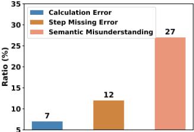
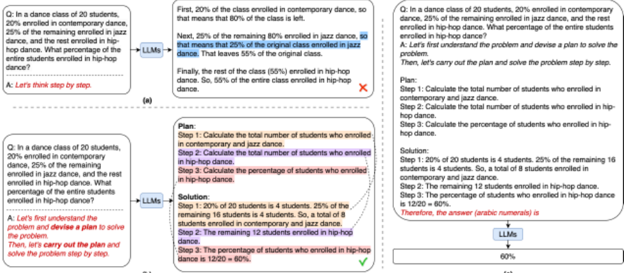
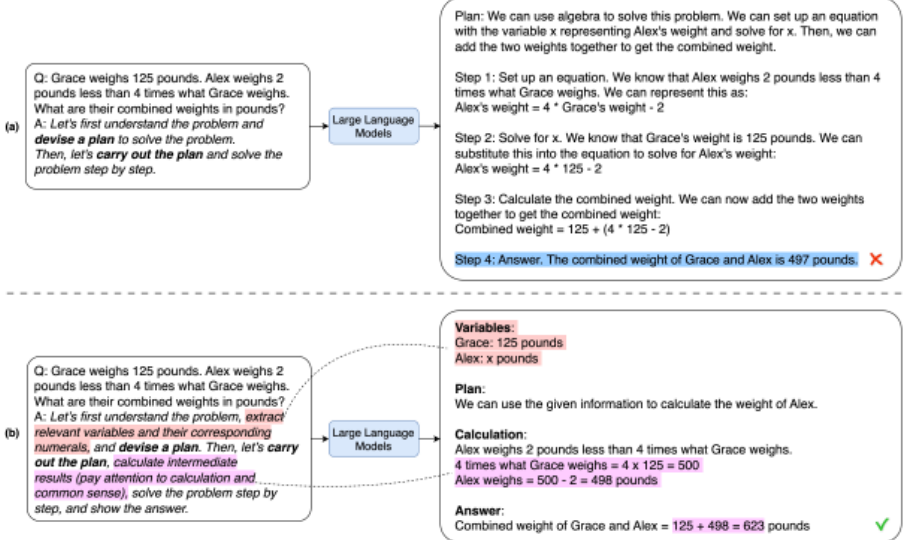
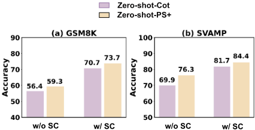
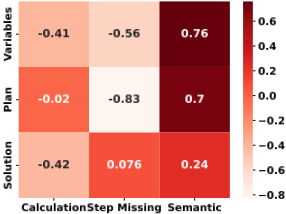

Plan-and-Solve 提示：通过先规划后求解改进 LLM 的 Zero-Shot Chain-of-Thought 推理
Zero-shot-CoT 仅靠 'Let's think step by step' 一句触发语就能让 LLM 生成推理链，但论文通过对 100 个算术样本的错误分析发现它存在计算错误、推理步骤缺失和语义理解三类缺陷。为此作者提出 Plan-and-Solve（PS）提示：先让 LLM 理解问题并制定计划、把任务分解为子任务，再按计划逐步执行；PS+ 变体进一步加入'提取相关变量与数值''计算中间结果'等细化指令。在 GPT-3（text-davinci-003）上跨算术、常识、符号三类共 10 个数据集评测，PS+ 全面大幅超越 Zero-shot-CoT，在 6 个算术数据集中 5 个超过 Zero-shot-PoT，平均准确率 76.7% 接近 8-shot Manual-CoT 的 77.6%。错误分析显示 PS+ 把计算错误降到 5%、缺步错误降到 7%，且变量定义与计划的存在与这两类错误呈负相关。对团队而言，这是'先规划后执行'提示模式的代表作，可直接迁移到零样本推理与 Agent 任务分解的提示设计中。
Zero-shot-CoT 虽免去了人工示例，但在多步推理中存在三类错误：计算错误（约 7%）、推理步骤缺失（约 12%）和语义理解错误（约 27%）。论文针对其中缺步与计算错误，探索仅通过提示设计（而非微调模型）提升 LLM 零样本推理的质量。
提出 Plan-and-Solve（PS）零样本提示：用触发句 'Let's first understand the problem and devise a plan to solve the problem. Then, let's carry out the plan and solve the problem step by step' 替换 Zero-shot-CoT 的 'Let's think step by step'，形成'先制定计划分解子任务、再按计划执行'的两段式推理；PS+ 在此基础上追加 'extract relevant variables and their corresponding numerals' 与 'calculate intermediate results (pay attention to calculation and commonsense)' 等针对错误类型的细化指令。整体流程分两步：Step 1 用模板 'Q: [X]. A: [T]' 生成含计划与步骤的推理文本（默认 greedy decoding），Step 2 用答案抽取提示（如 'Therefore, the answer (arabic numerals) is'）提取最终答案。
算术推理：PS+ 在全部 6 个数据集上较 Zero-shot-CoT 准确率至少提升 5%（GSM8K 除外，提升 2.9%）；PS 平均准确率比 Zero-shot-CoT 高 2.5%
PS+ 在 6 个算术数据集中的 5 个上超过 Zero-shot-PoT
PS+ 平均准确率 76.7%，略低于 8-shot Manual-CoT（77.6%），高于 Auto-CoT（75.9%）
常识推理：CommonsenseQA 上 PS+ 71.9% vs Zero-shot-CoT 65.2%；StrategyQA 上 65.4% vs 63.8%
符号推理：Last Letters 上 PS+ 75.2%，超过 Manual-CoT 70.6% 与 Zero-shot-CoT 65.2%；Coin Flip 上 PS+ 99.6%，略低于 Manual-CoT 100.0%，高于 Zero-shot-CoT 96.8%
结合 self-consistency（temperature 0.7、N=10）：PS+ 在 GSM8K 达 73.7%（无 SC 为 58.7%）、SVAMP 达 84.4%（无 SC 为 75.7%），均超过 Zero-shot-CoT+SC（70.7% 与 81.7%）
GSM8K 100 例错误分析：错误数 Zero-shot-CoT 46、PS 43、PS+ 39；PS+ 计算错误降至 5%、缺步错误降至 7%，语义理解错误与 Zero-shot-CoT 相当
相关性分析：生成文本中变量定义与计划的存在与计算错误、缺步错误呈负相关（相关值小于 0）
随机抽样 100 例中 90 例的 PS 预测确实包含计划
与 few-shot CoT 依赖人工示例、Zero-shot-CoT 只用单一触发句不同，PS 把零样本提示从'逐步思考'升级为'先规划分解、后按计划执行'的结构化范式，并通过在触发句中加入针对具体错误类型（变量提取、中间结果计算）的细化指令来定向压低计算与缺步错误；同时给出错误类型分布统计与'生成内容-错误类型'相关性分析，用实证支撑提示设计假设。
相关度级别：high
命中能力域：3.2 提示工程 | 3.3 Agent 架构与工具使用
理由：论文核心贡献是零样本思维链提示的设计与实证优化，直接命中 3.2 提示工程（提示技术与模式、思维链/推理提示）；其'先理解问题-制定计划分解子任务-按计划执行'的范式与 3.3 中 Agent 的规划与任务分解能力同构，可作为提升单 Agent 执行可靠性的提示层手段；其错误类型标注（计算/缺步/语义理解）与相关性分析方法对 3.5 的可靠性评测亦有借鉴价值。
建议动作：深入精读并做内部分享
arXiv:2305.04091v3 [cs.CL] 2023年5月26日
Lei Wang 1 Wanyu Xu 2 Yihuai Lan Zhiqiang Hu 3 Yunshi Lan 4
3 1 ∗
Roy Ka-Wei Lee Ee-Peng Lim
1
西南交通大学
新加坡管理大学 2
3 新加坡科技设计大学
4 华东师范大学
大语言模型（Large Language Models, LLMs）近来已被证明能够在各种自然语言处理（NLP）任务中取得令人瞩目的表现。为了应对多步推理任务，少样本思维链（chain-of-thought, CoT）提示在提示中加入了少量人工编写的逐步推理示例，使 LLMs 能够显式地生成推理步骤，从而提高其在推理任务上的准确率。为了消除这一人工投入，Zero-shot-CoT 将目标问题陈述与"Let's think step by step"拼接起来，作为 LLMs 的输入提示。尽管 Zero-shot-CoT 取得了成功，它仍然存在三个缺陷：计算错误、步骤缺失错误和语义理解错误。为了解决步骤缺失错误，我们提出了 Plan-and-Solve（PS）提示。该方法包含两个组成部分：首先制定一个计划，将整个任务划分为更小的子任务，然后按照该计划执行这些子任务。为了解决计算错误并提高所生成推理步骤的质量，我们用更详细的指令对 PS 提示进行扩展，得到了 PS+ 提示。我们在涵盖三类推理问题的十个数据集上评估了所提出的提示策略。在 GPT-3 上的实验结果表明，我们提出的零样本提示在所有数据集上都大幅优于 Zero-shot-CoT，与 Zero-shot-Program-of-Thought 提示相当或更优，并且在数学推理问题上与 8-shot CoT 提示性能相当。代码可在 https://github.com/AGIEdgerunners/Plan-and-Solve-Prompting 获取。
大语言模型（Large Language Models, LLMs）（Brown et al., 2020; Thoppilan et al., 2022; Chowdhery et al., 2022）最近在各种自然语言处理（NLP）任务中被证明非常有效。与之前的预训练语言模型（Pre-trained Language Models, PTMs）（Devlin et al., 2019; Liu
∗ 通讯作者。

5
et al., 2019）不同，这些 LLM 通常以服务的形式提供，出于商业考虑和潜在的滥用风险，用户无法访问模型参数（Sun et al., 2022）。因此，针对下游任务对 LLM 进行微调是具有挑战性的（He et al., 2021; Houlsby et al., 2019; Devlin et al., 2019）。相反，我们利用指令（或触发语句）来激发 LLM 基于其内嵌知识的强大推理能力，从而借助 LLM 解决复杂推理问题。迄今为止，LLM 已展现出令人印象深刻的能力：只需基于少量示例（即少样本学习，few-shot learning）对其进行条件化，或在不提供示例的情况下仅通过一个提示（prompt）作为条件（即零样本学习，zero-shot learning），便能解决新的推理问题。
为了利用 LLM 解决多步骤复杂推理任务，Wei et al. (2022b) 提出了少样本思维链（chain-of-thought, CoT）提示，该方法通过少量人工编写的逐步推理演示示例，使 LLM 在预测最终答案之前显式地生成中间推理步骤。在（Kojima et al., 2022）中，Zero-shot CoT 通过在输入给 GPT-3 等 LLM 的目标问题后附加" Let's think step by step "，消除了提示中对人工构建示例的需求。这一简单的提示策略出人意料地使 LLM 取得了与少样本 CoT 提示相似的性能。
尽管 Zero-shot-CoT 在解决多步推理任务方面取得了显著成功，但其在 100 个算术测试样本上的结果仍然暴露出三个缺陷（如图 1 所示）：(i) 计算错误（占测试样本的 7%）：即计算过程中的错误导致答案错误；(ii) 缺失步骤错误（占测试样本的 12%）：当遗漏了某些中间推理步骤时会出现此类错误，尤其是在涉及许多步骤的情况下；(iii) 语义误解（占测试样本的 27%）：即在问题语义理解和推理步骤连贯性方面存在其他错误，这可能是由 LLM 能力不足所致。
为了解决 Zero-shot-CoT 因缺失推理步骤而导致的问题，我们提出了 Plan-and-Solve（PS）提示。它由两个部分组成：首先制定一个计划，将整个任务划分为更小的子任务，然后按照该计划执行子任务。在我们的实验中，我们简单地将 Zero-shot-CoT 中的" Let's think step by step "替换为" Let's first understand the problem and devise a plan to solve the problem. Then, let's carry out the plan and solve the problem step by step "（见图 2 (b)）。
为了解决 Zero-shot-CoT 的计算错误并提高所生成推理步骤的质量，我们在 PS 提示中加入了更详细的指令。具体而言，我们对其进行了扩展，增加了“提取相关变量及其对应数值”和“计算中间结果（注意计算和常识）”这两条指令。这种提示变体被称为 PS+ 提示策略（见图 3(b)）。尽管十分简单，PS+ 策略仍极大地提升了所生成推理过程的质量。此外，该提示策略可以轻松定制，用于解决数学推理之外的各种问题，例如常识推理和符号推理问题。
我们在六个数学推理数据集上对所提出的提示方法进行了评估，包括 AQuA (Ling et al., 2017)、GSM8K (Cobbe et al., 2021)、MultiArith、AddSub、SingleEq 和 SVAMP (Patel et al., 2021)，两个常识推理数据集（CommonsenseQA (Talmor et al., 2019) 和 StrategyQA (Geva et al., 2021)），以及两个符号推理数据集（Last Letter 和 Coin Flip (Wei et al., 2022b)）。我们在 GPT-3 上的实验结果表明，我们提出的 Zero-shot-PS+ 提示在所有推理问题和数据集上都始终大幅优于 Zero-shot-CoT，并且与 Zero-shot-Program-of-Thought (PoT) 提示 (Chen et al., 2022)) 相当或更优。此外，尽管 PS+ 提示不需要人工演示示例，但其在算术推理上的性能与 8-shot CoT 提示相近。
总体而言，我们的结果表明：(a) Zero-shot PS 提示能够生成比 Zero-shot-CoT 提示质量更高的推理过程，因为 PS 提示提供了更详细的指令，引导大语言模型（LLMs）执行正确的推理任务；(b) Zero-shot PS+ 提示在某些数据集上优于 Few-shot manual-CoT 提示，这表明在某些情况下它有潜力超越人工 Few-shot CoT 提示，并有望激发新的 CoT 提示方法的进一步发展，以在 LLMs 中引出推理能力。
概述。我们提出了 PS 提示，这是一种新的零样本 CoT 提示方法，它使 LLMs 能够显式地为求解给定问题制定计划，并在预测输入问题的最终答案之前生成中间推理过程。与先前的少样本 CoT 方法（其在提示中包含逐步的少样本演示示例）不同，Zero-shot PS 提示方法不需要演示示例，其提示涵盖问题本身和一句简单的触发语句。与 Zero-shot-CoT 类似，Zero-shot PS 提示由两个步骤组成。在步骤 1 中，提示首先使用所提出的提示模板进行推理，以生成问题的推理过程和答案。在步骤 2 中，它使用答案提取提示（例如 "Therefore, the answer (arabic numerals) is"）来提取答案以供评估。
为了在解决输入问题的同时避免因计算错误和推理步骤缺失而导致的错误，该步骤旨在构建满足以下两个标准的模板：

(c)
挖掘子任务并完成这些子任务。
为满足第一个标准，我们遵循 Zero-shot-CoT 的做法，首先使用简单模板 'Q: [X] . A: [T] ' 将输入数据示例转换为提示。具体而言，输入槽 [X] 包含输入问题描述，而在输入槽 [T] 中指定一条人工编写的指令，以触发大语言模型（LLMs）生成包含一个计划以及完成该计划步骤的推理过程。在 Zero-shot-CoT 中，输入槽 [T] 中的指令包含触发指令 ' Let's think step by step '。而我们的 Zero-shot PS 提示方法则改为包含指令 ' devise a plan ' 和 ' carry out the plan '，如图 2(b) 所示。因此，提示将为 'Q: [X] . A: Let's first understand the problem and devise a plan to solve the problem. Then, let's carry out the plan and solve the problem step by step .'
然后，我们将上述提示传递给 LLM，LLM 随后输出一个推理过程。与 Zero-shot-CoT 一致，我们的方法默认采用贪心解码策略（1 条输出链）来生成输出。
为满足第二个标准，我们用更详细的指令来扩展基于计划的触发语句。具体而言，在触发语句中加入 ' pay attention to calculation '，以要求 LLMs 尽可能准确地进行计算。为减少因缺失必要推理步骤而产生的错误，我们加入了 ' extract relevant variables and their corresponding numerals '，以明确指示 LLMs 不要忽略输入问题描述中的相关信息。我们假设，如果 LLMs 遗漏了相关且重要的变量，就更有可能遗漏相关的推理步骤。对所生成的变量内容与缺失推理步骤错误之间的相关性分析（如图 5 所示）从实证上支持了这一假设（相关值小于 0）。此外，我们在提示中加入 ' calculate intermediate results '，以增强 LLM 生成相关且重要推理步骤的能力。具体示例如图 3(b) 所示。在步骤 1 结束时，LLM 生成包含答案的推理文本。例如，图 3(b) 中生成的推理文本包含 ' Combined weight of Grace and Alex = 125 + 498 = 623 pounds '。这种在触发语句中添加具体描述的策略，代表了一种提高复杂推理上零样本性能的新方法。
与 Zero-shot-CoT 类似，我们在步骤 2 中设计了另一个提示词，以使 LLM 从步骤 1 生成的推理文本中提取最终的数值答案。该提示词包含附加在第一个提示词之后的答案提取指令，其后紧跟 LLM 生成的推理文本。通过这种方式，LLM 将以期望的形式返回最终答案。

根据图 3(b) 中的示例，步骤 2 中使用的提示词将包含 ' Q: Grace weighs 125 pounds · · · Variables: Grace: 125 pounds · · · Answer: Combined weight of Grace and Alex = 125 + 498 = 623 pounds. Therefore, the answer (arabic numerals) is '。对于该示例，LLM 返回的最终答案为 ' 623 '。
所提出的方法在来自三类推理问题的十个基准测试（benchmark）数据集上进行评估：算术推理（Arithmetic Reasoning）：(1) GSM8K（Cobbe et al., 2021）数据集，由人类出题者创建，包含高质量、语言多样的小学数学应用题；(2) SVAMP（Patel et al., 2021）benchmark，通过对来自另一个现有数据集的一组问题进行简单修改而构建，包含面向四年级及以下学生的单未知数算术应用题；(3) MultiArith（Roy and Roth, 2016）数据集，包含需要多个推理步骤和多种运算的数学应用题；(4) AddSub（Hosseini et al., 2014）数据集，包含加减法算术应用题；(5) AQUA（Ling et al., 2017）数据集，包含带有自然语言推理依据的代数应用题；以及 (6) SingleEq（Koncel-Kedziorski et al., 2015）数据集，包含单方程的小学代数应用题，涉及对非负有理数和单个变量进行的多种数学运算；常识推理（Commonsense Reasoning）：(7) CSQA（Talmor et al., 2019）benchmark 数据集，包含需要不同类型的常识知识才能得出正确答案的选择题；以及 (8) StrategyQA（Geva et al., 2021）benchmark 数据集，其中的问题需要多步推理，但并未给出推理步骤，因此需要自行推断；符号推理（Symbolic Reasoning）：(9) Last Letter Concatenation（Wei et al., 2022b）数据集，包含需要将姓名中各单词的末字母串联起来的问题（例如，' James Brown ' → ' sn '）；以及 (10) Coin Flip（Wei et al., 2022b）数据集，包含根据问题中给出的步骤判断硬币在被翻转或未被翻转后是否仍然正面朝上的问题。表 1 给出了数据集的统计信息。
| Dataset | Domain | # Samples | Ave. words | Answer |
|---|---|---|---|---|
| MultiArith | Math | 600 | 31.8 | Number |
| AddSub | Math | 395 | 31.5 | Number |
| GSM8K | Math | 1319 | 46.9 | Number |
| AQUA | Math | 254 | 51.9 | Option |
| SingleEq | Math | 508 | 27.4 | Number |
| SVAMP | Math | 1000 | 31.8 | Number |
| CSQA | CS | 1221 | 27.8 | Option |
| StrategyQA | CS | 2290 | 9.6 | Yes / No |
| Last Letters | Sym. | 500 | 15 | String |
| Coin Flip | Sym. | 500 | 37 | Yes / No |
| Dataset | Domain | # Samples | Ave. words | Answer |
我们将所提出的零样本 PS 和 PS+ 提示方法与三类提示基线方法进行了比较：(1) 零样本基线。我们纳入了 zero-shot-CoT（Kojima et al., 2022）和 zero-shot-PoT（Chen et al., 2022）。前者在提示中附加 "Let's think step by step"，而不使用任何演示示例；后者使用大语言模型（LLM）（主要为 OpenAI Codex 1）生成 Python 程序，然后通过在 Python 解释器上执行所生成的程序来得出答案；(2) 基于人工演示的少样本方法。ManualCoT（Wei et al., 2022b）创建了八个手工制作的示例作为演示。(3) 基于自动演示的少样本方法。Auto-CoT（Zhang et al., 2022）通过基于多样性的聚类自动选择示例，并使用 zero-shot-CoT 生成推理链来构建演示。
遵循 Auto-CoT（Zhang et al., 2022）的做法，我们使用公开的 GPT-3（Brown et al., 2020）（175B）作为骨干语言模型，它是拥有公开 API 2 的使用最广泛的大语言模型（LLM）之一。由于 text-davinci-003 是 text-davinci-002 的升级版本，能够生成更高质量的文本、支持更复杂的指令，并在长篇内容生成方面表现更佳，因此我们在正文中报告使用 text-davinci-003 引擎的 GPT-3 的结果。在整个实验中，为了采用贪心解码策略，我们将温度（temperature）设置为 0（argmax 采样）。我们还纳入了两个少样本（few-shot）基线方法：Manual-CoT 和 Auto-CoT。按照原始论文 Wei et al. (2022b) 和 Zhang et al. (2022) 的建议，我们在 MultiArith、GSM8K、AddSub、SingleEq 和 SVAMP 上使用 8 个演示示例，在 AQuA 和 Last Letters 上使用 4 个示例，在 CSQA 上使用 7 个示例，在 StrategyQA 上使用 6 个示例。在评估指标方面，我们遵循 Manual-CoT（Wei et al., 2022b）的做法，报告所有方法在各数据集上的准确率。
1 https://openai.com/blog/openai-codex/
2 https://beta.openai.com/docs/models/gpt-3
算术推理。表 2 报告了我们的方法与现有零样本和少样本方法在算术推理数据集上的准确率对比。在零样本设置下，我们的 PS+ 提示（即在 PS 提示基础上给出更详细的指令）在所有算术推理数据集上都大幅优于 Zero-shot-CoT。具体而言，除 GSM8K 仅提升 2.9% 外，PS+ 提示在所有数据集上的准确率均比 Zero-shot-CoT 至少提升 5%。这一例外可能是由于 GSM8K 在语言复杂性方面是一个更具挑战性的数据集。PS 提示在所有数据集上也优于 Zero-shot-CoT，其平均准确率比 Zero-shot-CoT 高出 2.5%。
与另一个具有竞争力的零样本基线 PoT 相比，PS(+) 提示与 PS 提示的表现仍然令人印象深刻。PS+ 提示在六个算术数据集中的五个上优于 PoT。PS 提示也在三个算术数据集上优于 PoT。这些结果表明，在提示中加入更详细的指令能够有效地从大语言模型（LLM）中引出更高质量的推理步骤。
与少样本方法 Manual-CoT 和 Auto-CoT 相比，PS+ 提示取得的平均准确率（76.7%）略低于 Manual-CoT（77.6%），但高于 Auto-CoT（75.9%）。尽管这一比较并不公平，但该结果表明，零样本提示可以超越少样本思维链（CoT）提示，这有望推动进一步研究，开发出以更少人工投入即可有效引出 LLM 推理的新方法。
常识推理。表 3 展示了在常识推理数据集 CommonsenseQA 和 StrategyQA 上的结果。在此比较中，我们仅纳入了表现更好的零样本 PS+ 提示策略。零样本 PoT 被排除在外，因为它不适用于该问题。尽管 PS+ 提示在该问题上不及 Few-Shot-CoT(Manual)，但它在 CommonsenseQA（71.9% 对 65.2%）和 StrategyQA（65.4% 对 63.8%）数据集上始终优于 Zero-shot-CoT。
| Setting | Method (text-davinci-003) | MultiArith | GSM8K | AddSub | AQuA | SingleEq | SVAMP | Average |
|---|---|---|---|---|---|---|---|---|
| Zero-Shot | CoT | 83.8 | 56.4 57.0 | 85.3 | 38.9 | 88.1 | 69.9 | 70.4 |
| Zero-Shot | PoT | 92.2 | 85.1 | 43.9 | 91.7 | 70.8 | 73.5 | |
| Zero-Shot | PS (ours) | 87.2 | 58.2 | 88.1 | 42.5 | 89.2 | 72 | 72.9 |
| Zero-Shot | PS+ (ours) | 91.8 | 59.3 | 92.2 | 46 | 94.7 | 75.7 | 76.7 |
| Few-Shot | Manual-CoT | 93.6 | 58.4 | 91.6 | 48.4 | 93.5 | 80.3 | 77.6 |
| Few-Shot | Auto-CoT | 95.5 | 57.1 | 90.8 | 41.7 | 92.1 | 78.1 | 75.9 |
| Setting | Method (text-davinci-003) | MultiArith | GSM8K | AddSub | AQuA | SingleEq | SVAMP | Average |
| Method | CSQA | StrategyQA |
|---|---|---|
| Few-Shot-CoT (Manual) | 78.3 | 71.2 |
| Zero-shot-CoT | 65.2 | 63.8 |
| Zero-shot-PS+ (ours) | 71.9 | 65.4 |
| Method | CSQA | StrategyQA |
| Method | Last Letter | Coin Flip |
|---|---|---|
| Few-Shot-CoT (Manual) | 70.6 | 100 |
| Zero-shot-CoT | 64.8 | 96.8 |
| Zero-shot-PS+ (ours) | 75.2 | 99.6 |
| Method | Last Letter | Coin Flip |
符号推理。表 4 展示了 PS+ 提示与 Zero-shot-CoT 和 Few-shot-CoT 在符号推理数据集 Last Letters 和 Coin Flip 上的准确率。零样本 PoT 同样被排除在外，因为它并非为该问题而设计。在 Last Letters 上，我们的零样本 PS+ 提示（75.2%）优于 Manual-CoT（70.6%）和 Zero-shot-CoT（65.2%）。在 Coin Flip 上，零样本 PS+ 提示（99.6%）略逊于 Manual-CoT（100.0%），但以较大优势（96.8%）优于 Zero-shot-CoT。更多实验结果示例见附录 A.2。
自洽性提示的结果。自洽性（Self-consistency）(Wang et al., 2022b)（SC）被提出，旨在通过生成 N 个推理结果并以多数投票确定最终答案，从而减少大语言模型（LLM）输出中的随机性。在使用 SC 的情况下，各方法的结果通常预期会更加一致且更好。因此，我们在 GSM8K 和 SVAMP 数据集上评估了结合 SC 的零样本 PS+ 提示。在结合 SC 的实验中，我们将温度设为 0.7，将 N 设为 10。图 4 显示，在 GSM8K 和 SVAMP 上，结合 SC 的 PS+ 提示（73.7% 和 84.4%）显著优于不使用 SC 的版本（58.7% 和

75.7%）。前者在 GSM8K 和 SVAMP 上也始终优于结合 SC 的 Zero-shot-CoT（分别为 70.7% 和 81.7%），尽管 Zero-shot-CoT 也通过自洽性方法获得了提升。
提示的影响。表 5 展示了 6 种不同输入提示的性能比较。提示 1 和提示 2 分别用于 Zero-shot-CoT 和 Zero-shot PoT。其余提示是零样本 PS+ 提示策略第 1 步中在贪心解码下所用提示的变体。我们观察到，包含变量与数值提取的提示 3 的表现差于 Zero-shot-CoT 的提示 1。原因在于提示 3 不包含制定并完成计划的指令。然而，随着我们添加更多关于中间结果计算、计划设计和执行的指令，Zero-shot-PS+ 的其他提示表现良好。上述结果表明，当提示包含更详细的指令来引导 LLM 时，LLM 能够生成高质量的推理文本。针对不同推理问题的更多提示可参见附录 A.1。
错误分析。为了定性地评估零样本 PS+ 提示对计算错误和推理步骤缺失错误的影响，我们考察了 GSM8K 数据集上的错误分布。我们首先从 GSM8K 中随机抽取 100 个问题，使用 Zero-shot-CoT、Zero-shot-PS 和 Zero-shot-PS+ 提示策略生成推理文本并提取答案。Zero-shot-CoT 对其中 46 个问题生成了错误的最终答案，Zero-shot-PS 为 43 个，Zero-shot-PS+ 为 39 个。随后，我们分析并确定了所有这些问题的错误类型，如表 6 所示。
| No. | Trigger Sentence | GSM8K | SVAMP | |
|---|---|---|---|---|
| 1 | Let's think step by step. | (*1) | 56.4 | 69.9 |
| import math import numpy as np # Question: | ||||
| 2 | example['question'] # Answer this question by implementing a solver() function. def solver(): | (*2) | 57 | 70.8 |
| # Let's write a Python program step by step, and then return the answer # Firstly, we need define the following variable: | ||||
| 3 | Extract variables and assign their corresponding numerals to these variables first and then solve the problem step by step. | 50.5 | 69.5 | |
| 4 | Firstly, extract variables and their corresponding numerals. Then, calculate intermediate variables. Finally, solve the problem step by step. | 54.8 | 70.8 | |
| 5 | Let's first understand the problem and devise a plan to solve the problem. Then, let's carry out the plan and solve the problem step by step. | 58.2 | 72 | |
| 6 | Let's first understand the problem, extract relevant variables and their corresponding numerals, and make a plan. Then, let's carry out the plan, calculate intermediate variables (pay attention to correct numerical calculation and commonsense), solve the problem step by step, and show the answer. | 59.3 | 75.7 |
| No. | Trigger Sentence | | GSM8K | SVAMP |
| Method | Calculation | Missing | Semantic |
|---|---|---|---|
| Zero-shot-CoT | 7% | 12% | 27% |
| Zero-shot-PS | 7% | 10% | 26% |
| Zero-shot-PS+ | 5% | 7% | 27% |
| Method | Calculation | Missing | Semantic |
分析结果表明，PS+ 提示的计算错误（5%）和步骤缺失错误（7%）最少，且其语义理解错误与 Zero-shot-CoT 相当。Zero-shot-PS 的错误略多，但仍优于 Zero-shot-CoT。因此，二者的计划求解（plan-and-solve）提示有效地引导 LLM 生成清晰且完整的推理步骤。此外，PS+ 提示中额外的详细指令（即“提取相关变量及其对应数值”和“计算中间变量”）使 LLM 能够生成高质量的推理步骤，从而减少计算错误。
生成推理与错误类型的相关性分析。为了更深入地了解 PS+ 提示对错误类型的影响，我们考察了生成推理的各个子部分与错误类型之间的相关性。具体而言，我们分析生成推理文本中是否存在变量定义、推理计划和解答，并将其与三种错误类型进行关联。用于本分析研究的问题集合与此前错误类型分析中所使用的问题集合相同。图 5 展示了变量定义、计划、解答的存在性与三种不同错误类型之间的相关性矩阵。可以观察到，变量定义和计划的存在性与计算错误和缺失推理步骤错误均呈负相关。Zero-shot-PS+ 提示能够通过减少计算错误和缺失推理步骤错误，进一步提升大语言模型（LLM）在数学推理问题上的性能。
为了确定 PS 所做出的每条预测中是否存在计划，我们对 100 个数据样本进行了随机抽样，并检查了其对应的预测结果。我们的分析表明，这 100 条预测中有 90 条确实包含了计划。这一观察结果表明，GPT-3.5 和 GPT-4 等近期的 LLM 已经涌现出强大的规划能力。

众所周知，复杂推理问题对 NLP 模型而言极具挑战性，这类问题包括数学推理（Cobbe et al., 2021; Patel et al., 2021; Ling et al., 2017; Koncel-Kedziorski et al., 2016）（需要具备理解数学概念、进行计算以及多步推理的能力）、常识推理（Talmor et al., 2019; Geva et al., 2021）（需要具备基于常识知识做出判断的能力），以及逻辑推理（Wei et al., 2022b）（需要具备通过应用形式逻辑规则来操作符号的能力）。在大语言模型（LLMs）出现之前，Talmor et al. (2019) 使用由微调后的 GPT 模型生成的解释来训练 NLP 模型，发现所训练的模型在常识问答问题上取得了更好的性能。Hendrycks et al. (2021) 尝试使用带标注的推理依据（rationale）对预训练语言模型进行微调，但发现这些微调后的模型难以生成高质量的推理步骤。Wei et al. (2022a) 的近期研究表明，当 LLM 的参数规模扩展到数百亿级别时，会展现出强大的推理能力，例如 GPT-3 (Brown et al., 2020) 和 PaLM (Chowdhery et al., 2022)。这些 LLM 在仅提供少量演示示例的情况下，就能在各种不同的 NLP 任务上取得令人瞩目的性能。然而，这些模型在需要多步推理的问题上仍然表现不佳。这可能是由于所提供的少量示例不足以激发 LLM 的能力。
为了利用 LLM 的推理能力，Wei et al. (2022b) 提出了思维链（Chain-of-Thought, CoT）提示，在输入问题的答案之前附加多个推理步骤。借助这种简单的少样本（few-shot）提示策略，LLM 在复杂推理问题上能够取得好得多的表现。随后，许多工作（Wang et al., 2022a; Suzgun et al., 2022; Shaikh et al., 2022; Saparov and He, 2022）提出从不同方面进一步改进 CoT 提示，包括提示格式（Chen et al., 2022）、提示选择（Lu et al., 2022）、提示集成（Wang et al., 2022b; Li et al., 2022; Weng et al., 2022; Fu et al., 2022）、问题分解（Zhou et al., 2022; Khot et al., 2022; Dua et al., 2022; Press et al., 2022）以及规划（Yao et al., 2022; Huang et al., 2022; Wang et al., 2023; Liu et al., 2023; Sun et al., 2023; Yao et al., 2023）。Chen et al. (2022) 引入了 PoT 提示，利用经过代码预训练的 LLM 编写程序作为推理依据（rationale），从而将计算与推理解耦。为了省去人工投入，Kojima et al. (2022) 提出了 Zero-shotCoT，在不使用示例的情况下激发推理步骤的生成。为了发挥演示示例的优势并尽量减少人工投入，Zhang et al. (2022) 设计了 Auto-CoT。该方法首先通过对给定数据集进行聚类来自动获得 k 个示例。然后，它遵循 Zero-shot-CoT 为选定的示例生成推理依据。最后，通过将生成的推理依据添加到选定示例中，构建出作为 CoT 提示的演示示例。我们的工作与上述工作的不同之处在于，专注于以零样本（zero-shot）方式激发 LLM 的多步推理。我们要求 LLM 编写一个计划，将复杂的推理任务分解为多个推理步骤。此外，我们在提示中引入了详细的指令，以避免推理步骤中出现明显的错误。关于更多相关工作，读者可参阅综述（Huang and Chang, 2022）。
在本文中，我们发现 Zero-shot-CoT 仍然存在三个缺陷：计算错误、推理步骤缺失错误和语义理解错误。为解决这些问题，我们提出了计划与求解（plan-and-solve）提示策略（PS 提示和 PS+ 提示）。它们是新的零样本（zero-shot）提示方法，引导 LLM 制定一个将整个任务分解为更小子任务的计划，然后按照该计划执行这些子任务。在涵盖三类推理问题的十个数据集上的评估表明，PS+ 提示优于以往的零样本基线方法，并且在多个算术推理数据集上的表现与少样本（few-shot）思维链（CoT）提示相当。总体而言，我们的结果表明：(a) 零样本 PS+ 提示能够生成比 Zero-shot-CoT 提示质量更高的推理过程，因为 PS 提示能够提供更详细的指令，引导 LLM 进行正确的推理；(b) 零样本 PS+ 提示有潜力超越人工设计的少样本 CoT 提示，这有望推动新的 CoT 提示方法的进一步发展，以激发 LLM 的推理能力。此外，PS(+) 提示是一种通用的思想，可用于非推理任务，而对计划进行细化也是一个有趣的想法。我们将这些留作未来工作。
本工作存在两个局限性。首先，设计用于引导 LLM 生成正确推理步骤的提示需要花费精力。GPT-3 模型对提示中的表述十分敏感，因此我们需要仔细设计提示。其次，所提出的计划求解（plan-and-solve）提示有助于解决计算错误和推理步骤缺失错误，但语义误解错误仍然存在。未来我们将探索如何通过提示而非升级 LLM 来解决语义误解错误。
我们在六个数学推理数据集上进行了实验，包括 AQuA（Ling et al., 2017）、GSM8K（Cobbe et al., 2021）、MultiArith、AddSub、SingleEq 和 SVAMP（Patel et al., 2021），两个常识推理任务（CommonsenseQA（Talmor et al., 2019）和 StrategyQA（Geva et al., 2021）），以及两个符号任务（Last Letter 和 Coin Flip（Wei et al., 2022b）），其中 GSM8K 和 SVAMP 使用 MIT 许可证代码，AQUA 和 StrategyQA 使用 Apache-2.0 许可证代码，其余数据集未作说明。
所提出的提示不会收集和使用其他个人的个人信息。我们使用的提示列于附录中。本工作中的提示不包含任何歧视任何个人或群体的词语。在本工作中，提示不会对他人安全产生负面影响。
本节包括两部分：（1）我们尝试过的所有提示的结果；（2）Zero-shot-PS+ 生成的示例文本。除非另有说明，我们使用 GPT3（text-davinci-003）模型。
表 7 至表 16 列出了我们针对每个数据集尝试过的所有提示的结果。
表 17 至表 25 列出了 Zero-shot-PS+ 为每个数据集生成的示例输出。
| No. | Trigger Setence | Accuracy |
|---|---|---|
| 1 | Let's first understand the problem and devise a plan to solve the problem. Then, let's carry out the plan to solve the problem step by step. | 42.5 |
| 2 | Let's first understand the problem, extract all relevant variables and their corresponding numerals carefully, and devise a plan. Then, let's carry out the plan, calculate intermediate variables (pay attention to correct numerical calculation and common sense), solve the problem step by step carefully, and show the answer. | 42.9 |
| 3 | Let's first understand the problem, extract relevant correct variables and their correct corresponding numerals, and devise complete plans. Then, let's carry out the plan, calculate intermediate variables including extracted variables (pay attention to correct numerical calculation and common sense), solve the problem by single equations, and show the answer. | 43.7 |
| 4 | Let's first understand the problem, extract relevant variables and their corresponding numerals, and make a complete plan.Then, let's carry out the plan, calculate intermediate variables (pay attention to correct numerical calculation and commonsense), solve the problem step by step, and show the answer. | 46 |
| No. | Trigger Setence | Accuracy |
| No. | Trigger Setence | Accuracy |
|---|---|---|
| 1 | Let's first understand the problem and devise a plan to solve the problem. Then, let's carry out the plan to solve the problem step by step. | 58.2 |
| 2 | Let's first understand the problem, extract relevant variables and their corresponding numerals, and devise a plan. Then, let's carry out the plan, calculate intermediate variables (pay attention to correct numeral calculation and commonsense), solve the problem step by step, and show the answer. | 58.7 |
| 3 | Let's first understand the problem, extract relevant variables and their corresponding numerals, and make a complete plan.Then, let's carry out the plan, calculate intermediate variables (pay attention to correct numerical calculation and commonsense), solve the problem step by step, and show the answer. | 59.3 |
| No. | Trigger Setence | Accuracy |
| No. | Trigger Setence | Accuracy |
|---|---|---|
| 1 | Let's first understand the problem and devise a plan to solve the problem. Then, let's carry out the plan to solve the problem step by step. | 87.2 |
| 2 | Let's first understand the problem, extract relevant variables and their corresponding numerals, and devise a plan. Then, let's carry out the plan, calculate intermediate variables (pay attention to correct numeral calculation and commonsense), solve the problem step by step, and show the answer. | 88.3 |
| 3 | Let's first understand the problem, extract relevant variables and their corresponding numerals, and devise a complete plan. Then, let's carry out the plan, calculate intermediate variables (pay attention to the correctness of the calculation and common sense), solve the problem step by step, and show the answer. | 90.5 |
| 4 | Let's first understand the problem, extract relevant variables and their corresponding numerals, and devise a complete plan. Then, let's carry out the plan, calculate intermediate variables (pay attention to correct numerical calculation and commonsense), solve the problem step by step, and show the answer. | 91.8 |
| No. | Trigger Setence | Accuracy |
| No. | Trigger Setence | Accuracy |
|---|---|---|
| 1 | Let's first understand the problem and devise a plan to solve the problem. Then, let's carry out the plan to solve the problem step by step. | 72 |
| 2 | Let's first understand the problem, extract relevant variables and their corresponding numerals, and devise a plan. Then, let's carry out the plan, calculate intermediate variables (pay attention to correct numeral calculation and commonsense), solve the problem step by step, and show the answer. | 75.4 |
| 3 | Let's first understand the problem, extract relevant variables and their corresponding numerals, and make a complete plan.Then, let's carry out the plan, calculate intermediate variables (pay attention to correct numerical calculation and commonsense), solve the problem step by step, and show the answer. | 75.7 |
| No. | Trigger Setence | Accuracy |
| No. | Trigger Setence | Accuracy |
|---|---|---|
| 1 | Let's first understand the problem and devise a plan to solve the problem. Then, let's carry out the plan to solve the problem step by step. | 87.3 |
| 2 | Let's first understand the problem, extract relevant variables and their corresponding numerals, and devise a complete plan.Then, let's carry out the plan, calculate intermediate variables (pay attention to correct numerical calculation and commonsense), solve the problem step by step, and show the answer. | 87.8 |
| 3 | Let's first understand the problem, extract relevant variables and their corresponding numerals, and devise a plan. Then, let's carry out the plan, calculate intermediate variables (pay attention to correct numeral calculation and commonsense), solve the problem step by step, and show the answer. | 92.2 |
| No. | Trigger Setence | Accuracy |
| No. | Trigger Setence | Accuracy |
|---|---|---|
| 1 | Let's first understand the problem and devise a plan to solve the problem. Then, let's carry out the plan to solve the problem step by step. | 92.3 |
| 2 | Let's first understand the problem, extract relevant variables and their corresponding numerals, and devise a plan. Then, let's carry out the plan, calculate intermediate variables (pay attention to correct numeral calculation and commonsense), solve the problem step by step, and show the answer. | 94.7 |
| No. | Trigger Setence | Accuracy |
| No. | Trigger Setence | Accuracy |
|---|---|---|
| 1 | Let's devise a plan and solve the problem step by step. | 67.4 |
| 2 | Let's first understand the problem, extract relevant variables and their corresponding numerals, and devise a complete plan.Then, let's carry out the plan, calculate intermediate variables (pay attention to correct numerical calculation and commonsense), solve the problem step by step, and show the answer. | 71.9 |
| No. | Trigger Setence | Accuracy |
| No. | Trigger Setence | Accuracy |
|---|---|---|
| 1 | Let's devise a plan and solve the problem step by step. | 61.5 |
| 2 | Let's devise a complete plan. Then, let's carry out the plan, solve the problem step by step, and show the answer. | 63 |
| 3 | Let's first prepare relevant information and make a plan. Then, let's answer the question step by step (pay attention to commonsense and logical coherence). | 65.4 |
| No. | Trigger Setence | Accuracy |
| 0 | 1 | 2 |
|---|---|---|
| No. | Trigger Setence | Accuracy |
| 1 | Let's devise a plan and solve the problem step by step. | 75.2 |
| 0 | 1 | 2 |
| No. | Trigger Setence | Accuracy |
|---|---|---|
| 1 | Let's devise a complete plan. Then, let's carry out the plan, solve the problem step by step, and show the answer. | 70.6 |
| 2 | Let's first devise a plan, then solve the problem step by step. | 72.6 |
| 3 | Let's first devise a plan, then solve the problem step by step.(Distinguish between tail up and head up) | 84 |
| 4 | Let's first understand the problem and devise a complete plan.Then, let's carry out the plan, reason problem step by step. Every step answer the subquestion "does the person flip and what is the coin current state?", and according to the last coin state, give the final answer (pay attention that the coin turns state at every flip). Plan: Step 1: | 94.2 |
| 5 | Let's first understand the problem and devise a complete plan. Then, let's carry out the plan, reason problem step by step. Every step answer the subquestion "does the person flip and what is the coin current state?", and according to the coin last state give the final answer(pay attention to every flip, the coin turns state). Plan: Step 1: | 99 |
| 6 | Let's first understand the problem and devise a complete plan. Then, let's carry out the plan and reason problem step by step. Every step answer the subquestion, "does the person flip and what is the coin's current state?". According to the coin's last state, give the final answer (pay attention to every flip and the coin's turning state). | 99.6 |
| No. | Trigger Setence | Accuracy |
表 17：Zero-shot-PS+ 在 AQuA 上的示例输出。
问：某工人在由连续 15 个工作日组成的两周内的平均工资为每天 90 美元。在前 7 天，他的平均工资为每天 87 美元，而最后 7 天的平均工资为每天 92 美元。他在第 8 天的工资是多少？答案选项：(A) 83 美元 (B) 92 美元 (C) 90 美元 (D) 97 美元 (E) 104 美元
答：让我们首先理解问题，提取相关变量及其对应的数值，并制定一个完整的计划。然后，让我们执行该计划，计算中间变量（注意正确的数值计算和常识），逐步解决问题，并给出答案。
问：如果 27 瓶汽水售价为 A 美分，那么 B 瓶汽水售价为多少美元？答案选项：(A) AB/2700 (B) 27/AB (C) AB/270 (D) 2700/AB (E) 100AB/27
答：让我们首先理解问题，提取相关变量及其对应的数值，并制定一个完整的计划。然后，让我们执行该计划，计算中间变量（注意正确的数值计算和常识），逐步解决问题，并给出答案。
27 瓶汽水售价为 A 美分
B 瓶汽水
表 18：Zero-shot-PS+ 在 GSM8K 上的示例输出。
问：James 决定每周 3 次进行 3 组短跑。他每次短跑跑 60 米。他一周总共跑多少米？
答：让我们首先理解问题，提取相关变量及其对应的数值，并制定一个完整的计划。然后，让我们执行该计划，计算中间变量（注意正确的数值计算和常识），逐步解决问题，并给出答案。
James 每周 3 次进行 3 组短跑。
每组短跑为 60 米。
我们需要计算 James 一周总共跑了多少米。
James 一周跑的短跑总组数 = 3 组 x 3 次 = 9 组
James 一周跑的总米数 = 9 组 x 60 米 = 540 米
James 一周跑 540 米。
问：在一个有 20 名学生的舞蹈班中，20% 的学生报名了现代舞，剩余学生中的 25% 报名了爵士舞，其余学生报名了嘻哈舞。报名嘻哈舞的学生占全部学生的百分比是多少？
答：让我们首先理解问题，提取相关变量及其对应的数值，并制定一个完整的计划。然后，让我们执行该计划，计算中间变量（注意正确的数值计算和常识），逐步解决问题，并给出答案。
已知：学生总数 = 20 报名现代舞的学生百分比 = 20% 报名爵士舞的学生百分比 = 25% 计划：
全部学生中有 60% 报名了嘻哈舞。
表 19：Zero-shot-PS+ 在 MultiArith 上的示例输出。
问：学校食堂为学生午餐订购了 42 个红苹果和 7 个青苹果。但是，如果只有 9 名学生想要水果，食堂最终多出了多少个苹果？
答：让我们首先理解问题，提取相关变量及其对应的数值，并制定一个完整的计划。然后，让我们执行该计划，计算中间变量（注意正确的数值计算和常识），逐步解决问题，并给出答案。
问：卡罗尔和她的妈妈正在从菜园里拔胡萝卜。卡罗尔拔了 29 根，她的妈妈拔了 16 根。如果只有 38 根胡萝卜是好的，他们一共有多少根坏胡萝卜？
答：让我们首先理解问题，提取相关变量及其对应的数值，并制定一个完整的计划。然后，让我们执行该计划，计算中间变量（注意正确的数值计算和常识），逐步解决问题，并给出答案。
表 20：Zero-shot-PS+ 在 SVAMP 上的示例输出。
问：妈妈总共买了 70 件白色 T 恤。如果白色 T 恤可以按包装购买，妈妈买了 14 个包装。每个包装里有多少件白色 T 恤？
答：让我们首先理解问题，提取相关变量及其对应的数值，并制定一个完整的计划。然后，让我们执行该计划，计算中间变量（注意正确的数值计算和常识），逐步解决问题，并给出答案。
问：Jesse 的房间长 19 英尺、宽 18 英尺。如果她总共有 20 个房间，她需要多少地毯才能铺满所有房间的地板？
答：让我们首先理解问题，提取相关变量及其对应的数值，并制定一个完整的计划。然后，让我们执行该计划，计算中间变量（注意正确的数值计算和常识），逐步解决问题，并给出答案。
问：谷仓里原有 28 捆干草。Tim 今天往谷仓里堆放了干草捆。现在谷仓里有 54 捆干草。他往谷仓里存放了多少捆干草？
答：让我们首先理解问题，提取相关变量及其对应的数值，并制定一个计划。然后，让我们执行该计划，计算中间变量（注意正确的数值计算和常识），逐步解决问题，并给出答案。
谷仓中干草捆的初始数量 = 28
Tim 堆放干草捆后谷仓中干草捆的数量 = 54
通过用 Tim 堆放后谷仓中干草捆的数量减去干草捆的初始数量，计算 Tim 存放在谷仓中的干草捆数量。
Tim 存放在谷仓中的干草捆数量 = 54 - 28 = 26
Tim 在谷仓中存放了 26 捆干草。
问：花瓶里原有 6 朵玫瑰。Mary 从她的花园里剪了一些玫瑰。现在花瓶里有 16 朵玫瑰。她剪了多少朵玫瑰？
答：让我们首先理解问题，提取相关变量及其对应的数值，并制定一个计划。然后，让我们执行该计划，计算中间变量（注意正确的数值计算和常识），逐步解决问题，并给出答案。
花瓶中玫瑰的初始数量 = 6
花瓶中玫瑰的最终数量 = 16
用最终数量减去初始数量，以计算 Mary 剪下的玫瑰数量。
Mary 剪下的玫瑰数量 = 16 - 6 = 10
Mary 从她的花园里剪了 10 朵玫瑰。
问：在餐厅用餐后，Sally、Sam 和 Alyssa 决定平分账单。如果每人支付了 45 美元，那么账单总额是多少？
答：让我们首先理解问题，提取相关变量及其对应的数值，并制定一个计划。然后，让我们执行该计划，计算中间变量（注意正确的数值计算和常识），逐步解决问题，并给出答案。
问题：在餐厅用餐后，Sally、Sam 和 Alyssa 决定平分账单。如果每人支付了 45 美元，那么账单总额是多少？
数值：
T = N x A
T = 3 x 45
T = 135
答案：账单总额为 135 美元。
问：Mary 正在烤蛋糕。食谱需要 8 杯面粉。她已经放入了 2 杯。她还需要加多少杯？
答：让我们首先理解问题，提取相关变量及其对应的数值，并制定一个计划。然后，让我们执行该计划，计算中间变量（注意正确的数值计算和常识），逐步解决问题，并给出答案。
Mary 需要往蛋糕里加 8 杯面粉。她已经放入了 2 杯。
从所需面粉总量中减去 Mary 已经放入的面粉量。
8 杯（所需面粉总量）- 2 杯（Mary 已经放入的面粉量）= 6 杯（Mary 需要加入的面粉量）
答案：Mary 还需要再加 6 杯面粉。
表 23：Zero-shot-PS+ 在 CommonsenseQA 上的示例输出。
问：什么地方有长椅掩映在树丛中？答案选项：(A) 州立公园 (B) 公交车站 (C) 公交车场 (D) 雕像 (E) 火车站
答：让我们首先理解问题，提取相关变量及其对应的数值，并制定一个完整的计划。然后，让我们执行该计划，计算中间变量（注意正确的数值计算和常识），逐步解决问题，并给出答案。
该问题询问的是一个有长椅掩映在树丛中的地方。答案选项是 (A) 州立公园、(B) 公交车站、(C) 公交车场、(D) 雕像和 (E) 火车站。
答案是 (A) 州立公园。州立公园通常位于有树木的自然区域，并且常常设有长椅供游客坐下欣赏风景。
问：在什么地方配备灭火器是个好主意但并非必需？答案选项：(A) 校车 (B) 船 (C) 房子 (D) 医院 (E) 学校
答：让我们首先理解问题，提取相关变量及其对应的数值，并制定一个完整的计划。然后，让我们执行该计划，计算中间变量（注意正确的数值计算和常识），逐步解决问题，并给出答案。
这个问题问的是在什么地方配备灭火器是个好主意但并非必需。答案选项为 (A) 校车、(B) 船、(C) 房子、(D) 医院和 (E) 学校。
最佳答案是 (C) 房子。在房子里配备灭火器是个好主意，但并非必需。校车、船、医院或学校通常并不要求配备灭火器。
问：在1976年奥运会上获得最多金牌的国家现在还存在吗？
答：让我们首先准备相关信息并制定一个计划。然后，让我们逐步回答问题（注意常识和逻辑连贯性）。
问：《蒙娜丽莎》和《米洛的维纳斯》在同一个博物馆里吗？
答：让我们首先准备相关信息并制定一个计划。然后，让我们逐步回答问题（注意常识和逻辑连贯性）。
是的，《蒙娜丽莎》和《米洛的维纳斯》都位于法国巴黎的卢浮宫。
问：取"Lino Mariel Aditya Elisabeth"中每个单词的最后一个字母，并将它们连接起来
问：取"Jacky Socorro Mark Wanda"中每个单词的最后一个字母，并将它们连接起来
表 26：Zero-shot-PS+ 在 Coin Flip 任务上的示例输出。
问：一枚硬币正面朝上。Walter 没有翻转硬币。Mikayla 没有翻转硬币。Larry 没有翻转硬币。Ryan 没有翻转硬币。硬币仍然是正面朝上吗？注意，这里的"flip"意为"reverse"（翻转）。
答：让我们首先理解问题并制定一个完整的计划。然后，让我们执行该计划并逐步对问题进行推理。每一步都回答子问题：“这个人是否翻转了硬币，硬币当前的状态是什么？”。根据硬币的最后状态，给出最终答案（注意每一次翻转以及硬币的翻转状态）。
问：一枚硬币正面朝上。Lorena 没有翻转硬币。Shana 没有翻转硬币。Priscilla 没有翻转硬币。Summer 没有翻转硬币。硬币仍然是正面朝上吗？注意，这里的"flip"意为"reverse"（翻转）。
答：让我们首先理解问题并制定一个完整的计划。然后，让我们执行该计划并逐步对问题进行推理。每一步都回答子问题：“这个人是否翻转了硬币，硬币当前的状态是什么？”。根据硬币的最后状态，给出最终答案（注意每一次翻转以及硬币的翻转状态）。
步骤 1：Lorena 没有翻转硬币。
步骤 2：Shana 没有翻转硬币。
步骤 3：Priscilla 没有翻转硬币。
步骤 4：Summer 没有翻转硬币。
步骤 1：Lorena 没有翻转硬币。因此，硬币仍然是正面朝上。
步骤 2：Shana 没有翻转硬币。因此，硬币仍然是正面朝上。
步骤 3：Priscilla 没有翻转硬币。因此，硬币仍然是正面朝上。
步骤 4：Summer 没有翻转硬币。因此，硬币仍然是正面朝上。
最终答案：是的，硬币仍然是正面朝上。
1 条证据未在原文中核对到